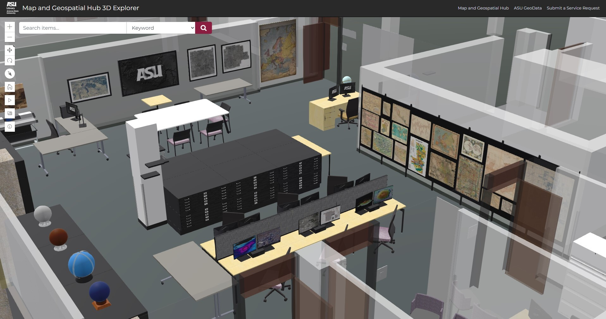
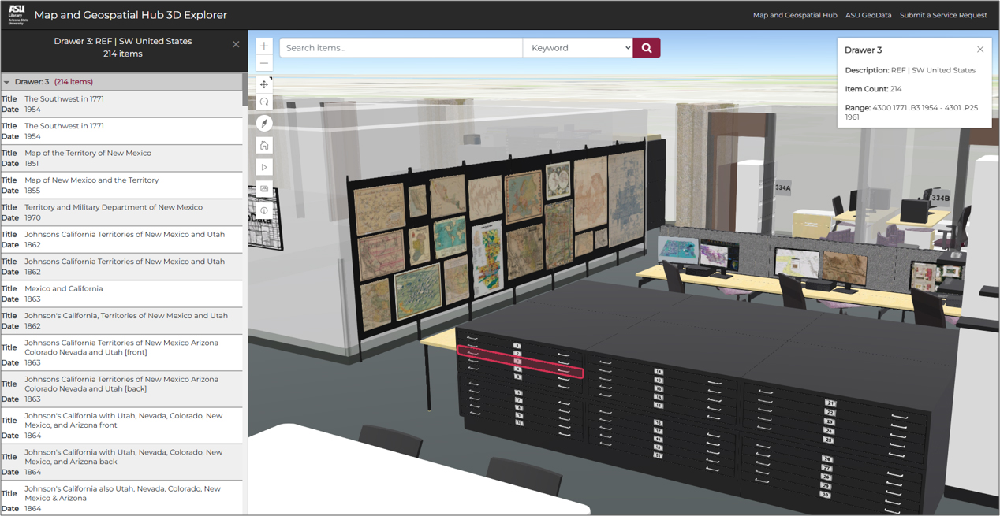
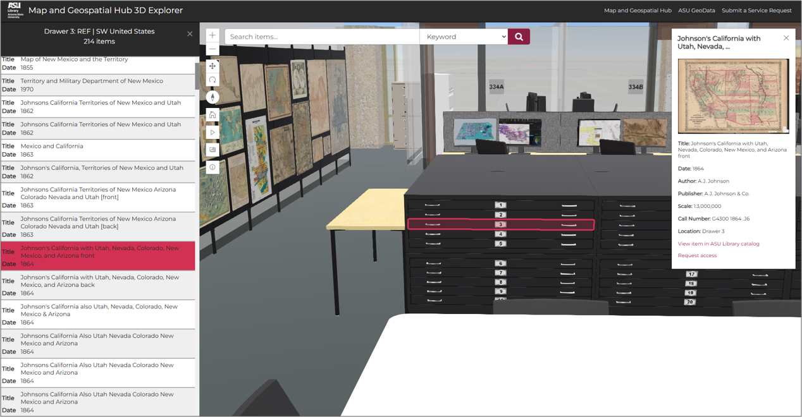
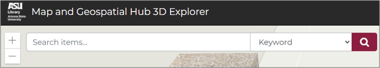
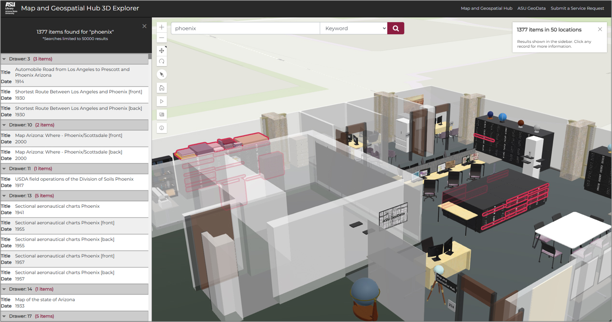
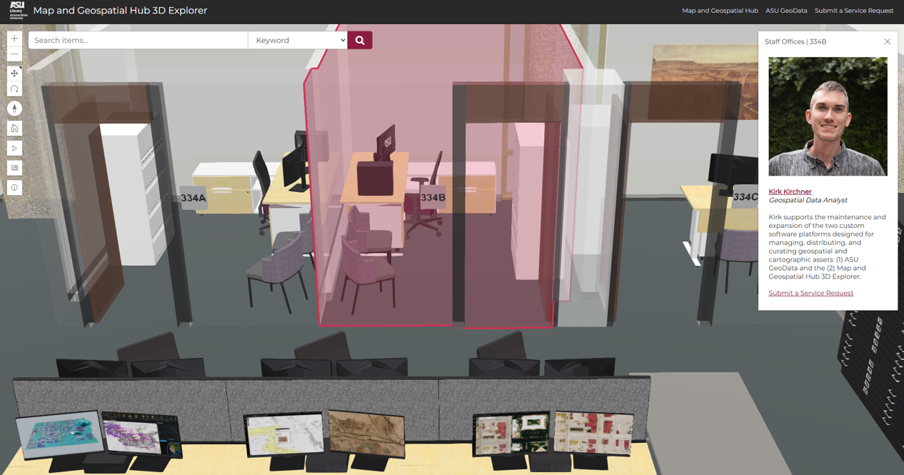
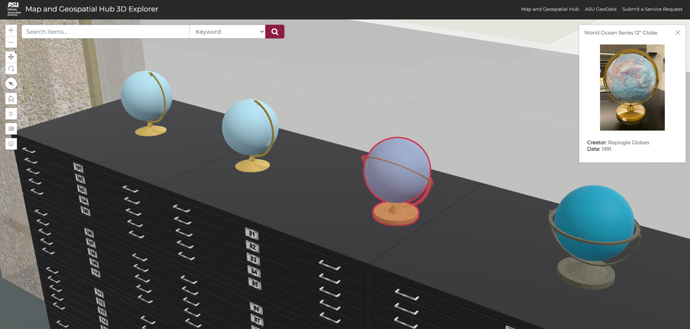
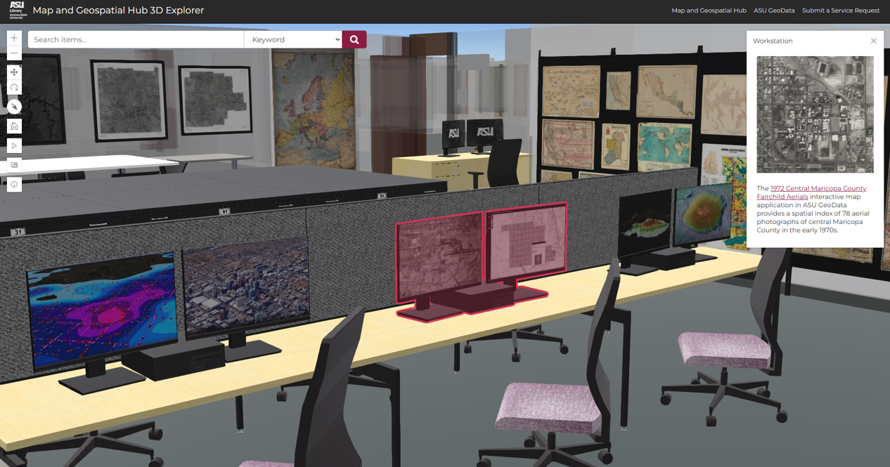
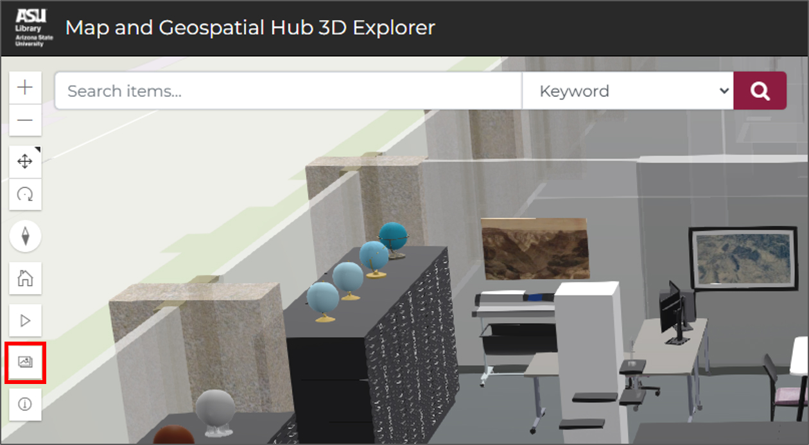
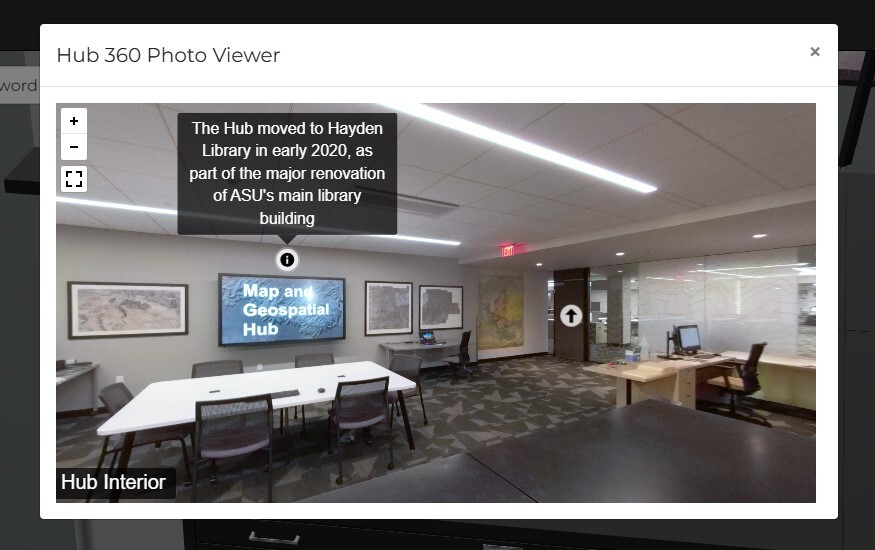

Enter values for at least one search criterion. Fields can be left blank.
Welcome to the virtual Map and Geospatial Hub at the Arizona State University Library!
Find us in the real world in ASU’s Hayden Library, Tempe, Arizona, USA.
Here at the Hub, we hold thousands of maps, aerial photographs, and other geographic information resources.
Use this 3D Explorer application to virtually explore the Hub space and its resources.
Use the navigation controls (highlighted in red) to move through and reposition the 3D map scene.
Use the “home” button (highlighted in blue) to return to the default scene view.
Use the “play” button (highlighted in green) to auto-rotate the scene; “pause” stops the rotation.
Exploring our cartographic resources is easy. Simply select any drawer or shelf. A pop-up box will appear and summarize the contents of that location.
Select the “View Item List” button in the pop-up box to view a list of all items contained in that location.
In the panel that appears, you’ll see a list of all items contained in your selection. Choose any of the items in the list to learn more details about it.
The pop-up box will reveal details such as the item’s title, publication date, author, publisher, cartographic scale, and library catalog record.

When available, you will also find a link to view a particular item in a separate spatial index web map, or a link to a resource that curates the item with more context.
A thumbnail image of the item will also appear in the pop-up box when available.
If a thumbnail image is present, you can select it to view it more closely. Use the image viewer controls to magnify, rotate, flip, or otherwise manipulate the view of the image.
Search for maps, aerial photos, and other geographic information resources by attributes such as keyword or call number.
Use Advanced Search to apply multiple criteria to your search, such as format, theme, region, timeframe, etc.
Item-level search results will appear in the panel. All locations containing the search results will be highlighted throughout the scene.
The sidebar and pop-up box will indicate the total number of items identified by your search. The sidebar also groups and counts search results by each location.
Additional information is available for nearly every object in the 3D model. Explore the Hub by selecting features in the space.
For example, you can also select office locations to learn more about the staff members who occupy them, as well as how to get in touch.
Or select globes to learn about and view photos of each one.
Select the maps and other geovisualizations displayed through the space to learn more about them.
Select other features in the workspace too, such as equipment and furniture.
Select the button with the image icon to view a 360 degree panorama photo of the space.
Virtually tour within the panorama viewer and discover “hotspots” that reveal interesting facts about the space.
Select the “i” (information) button to reactivate this information box.
Visit our web page to learn more about the ASU Library Map and Geospatial Hub: geospatial.asu.edu.
Visit the Map and Geospatial Hub’s GitHub Page to learn more about this project, including its source code and production credits.